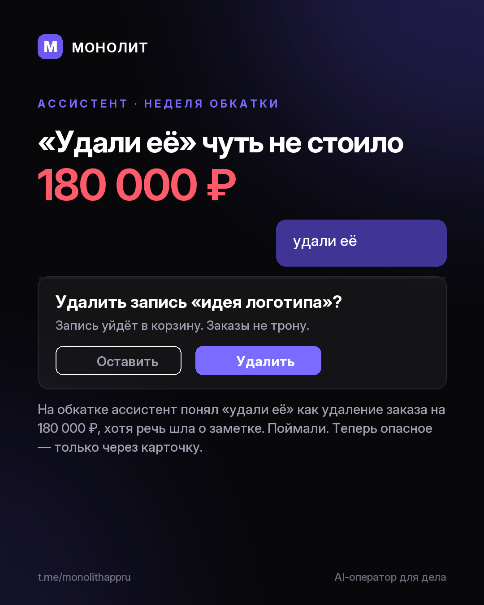

Дневник разработки · 26.07.2026
Ассистент перестал путаться (девлог)

Одно «удали её» чуть не стоило 180 000 ₽
На обкатке ассистент понял «удали её» как удаление заказа на 180 000 ₽. Речь шла о заметке. Поймали и всю неделю учили его не путаться.
Опасное — только через карточку. Перед удалением ассистент показывает, что именно удалит, и ждёт ответа. Под обычными действиями появилась полоска «Отменить».
Помнит свой вопрос. Спросил про гонорар, а ты ответил «шестьдесят»? Запишет 60 000 ₽ в тот самый заказ, не потеряет по дороге.
Отвечает мгновенно. Мелкие реплики больше не ходят в нейросеть и не превращаются в мусорные записи. Заказы по-русски находятся в любом регистре.
Всё это выйдет ближайшим обновлением Windows-беты, само. Первый раз: сайт. Вопросы и доступ @sbphotoshoter
МОНОЛИТ — учёт заказов, клиентов и денег одной фразой. Windows и Android, бесплатная бета.
Скачать Читать канал